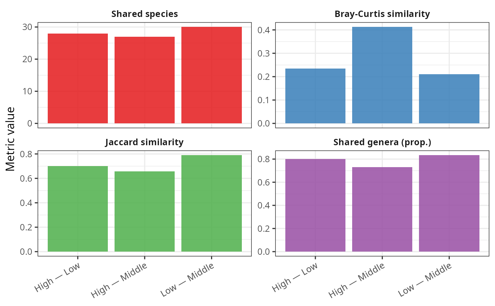

Companion bar chart for community_sharing_plot()
Source: R/community_sharing_plot.R
community_sharing_barplot.Rd
Computes the same pairwise metrics as community_sharing_plot() and displays
them as grouped bars, with one panel per metric and a free y-axis. Each
metric is therefore compared across pairs on its own scale, which matters
because metrics live on incomparable scales (e.g. a shared-species count
dwarfs a Bray-Curtis similarity in [0, 1]). Useful for precise numerical
comparison alongside the network figure.
Usage
community_sharing_barplot(
physeq,
fact,
metrics = default_sharing_metrics(),
show_na_modality = FALSE,
base_size = 12,
title = NULL
)Arguments
- physeq
(required) A phyloseq::phyloseq object.
- fact
(required, character) Name of a
sample_data(physeq)column. Must have 2 to 4 unique values.- metrics
(named list, default
default_sharing_metrics()) Metric definitions frommake_sharing_metric().- show_na_modality
(logical, default
FALSE) Same meaning as incommunity_sharing_plot().- base_size
(numeric, default
12) Base font size.- title
(character, default
NULL) Plot title.
Value
A ggplot2::ggplot object.
Examples
# \donttest{
data(data_fungi_mini, package = "MiscMetabar")
if (all(vapply(c("purrr", "tidyr", "vegan"), requireNamespace,
logical(1), quietly = TRUE))) {
# One panel per metric, pairs on the x-axis, free y-scale per metric
community_sharing_barplot(data_fungi_mini, fact = "Height")
}

# }